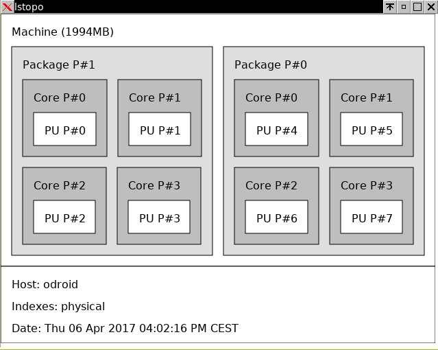
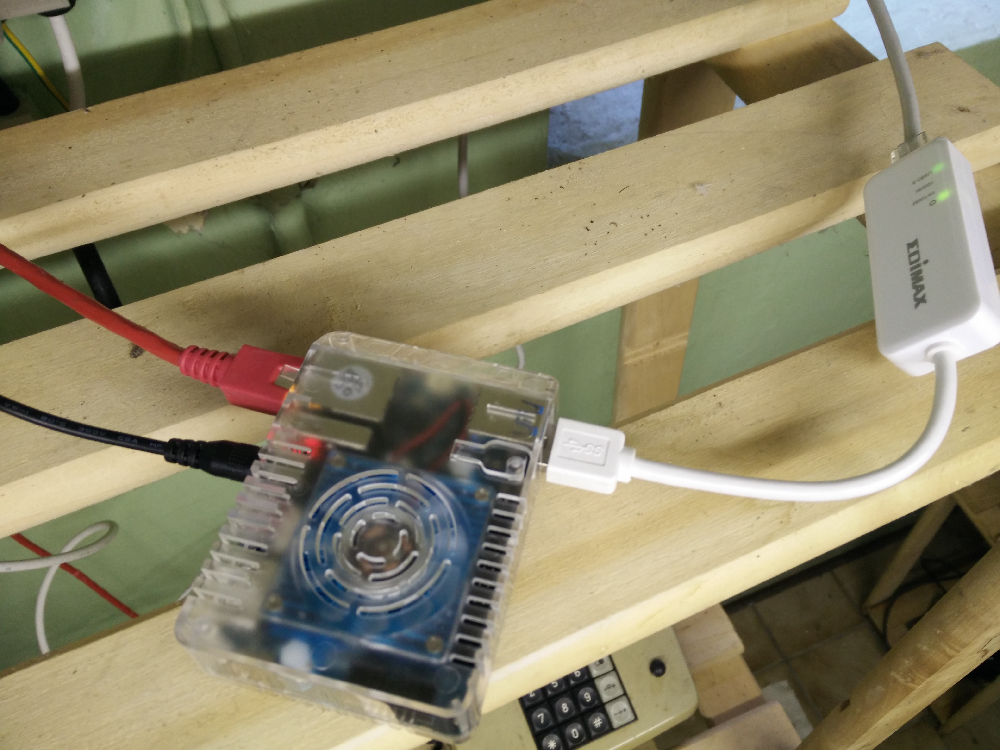

, 18 min read
Using Odroid as IP Router
Original post is here eklausmeier.goip.de/blog/2017/04-14-using-odroid-as-ip-router.
I purchased an Odroid-XU4 for ca. 80 EUR including power-supply and case from Pollin. The original manufacturer is hardkernel. I intended to use this small ARM computer as a router and firewall. In the past I had used routers from multiple vendors, e.g., Linksys/Cisco, TP-Link, AVM/FritzBox, Netgear, and so on. There is a rule of thumb with all these devices: Usually you have to reboot them once or twice a month, otherwise they misbehave somehow. At least three of these device went completely catatonic. Now I had enough of this, I also wanted a command line interface to the router, ideally a real Linux system with bash, cron, gcc, etc. Although I already own an Intel NUC and I am very happy with this computer, an Intel NUC is a little bit too expensive to be used as just a router.
I recommend to additionally purchase a RTC backup battery. The Odroid has a realtime clock, but loses all date and time information once powered off. This way the log of the computer is garbled.
1. Installing Arch Linux on Odroid
I followed the description in archlinux|ARM. Below statements are just copied verbatim from that link.
dd if=/dev/zero of=/dev/sdX bs=1M count=8
fdisk /dev/sdX
mkfs.ext4 /dev/sdX1
mkdir root
mount /dev/sdX1 root
wget https://os.archlinuxarm.org/os/ArchLinuxARM-odroid-xu3-latest.tar.gz
bsdtar -xpf ArchLinuxARM-odroid-xu3-latest.tar.gz -C root
cd root/boot
sh sd_fusing.sh /dev/sdX
cd ../..
umount root
All commands above proceed quickly. Only downloading the almost 300MB big Arch Linux image file takes some time according your internet speed.
Once Arch Linux is installed the computer looks like this.
$ df -h
Filesystem Size Used Avail Use% Mounted on
dev 931M 0 931M 0% /dev
run 997M 1.4M 996M 1% /run
/dev/mmcblk1p1 30G 2.2G 26G 8% /
tmpfs 997M 0 997M 0% /dev/shm
tmpfs 997M 0 997M 0% /sys/fs/cgroup
tmpfs 997M 4.0K 997M 1% /tmp
. . .
Here is information from cpuinfo:
$ cat /proc/cpuinfo
processor : 0
model name : ARMv7 Processor rev 3 (v7l)
BogoMIPS : 78.00
Features : half thumb fastmult vfp edsp neon vfpv3 tls vfpv4 idiva idivt vfpd32 lpae
CPU implementer : 0x41
CPU architecture: 7
CPU variant : 0x0
CPU part : 0xc07
CPU revision : 3
processor : 1
model name : ARMv7 Processor rev 3 (v7l)
BogoMIPS : 78.00
Features : half thumb fastmult vfp edsp neon vfpv3 tls vfpv4 idiva idivt vfpd32 lpae
CPU implementer : 0x41
CPU architecture: 7
CPU variant : 0x0
CPU part : 0xc07
CPU revision : 3
processor : 2
model name : ARMv7 Processor rev 3 (v7l)
BogoMIPS : 78.00
Features : half thumb fastmult vfp edsp neon vfpv3 tls vfpv4 idiva idivt vfpd32 lpae
CPU implementer : 0x41
CPU architecture: 7
CPU variant : 0x0
CPU part : 0xc07
CPU revision : 3
processor : 3
model name : ARMv7 Processor rev 3 (v7l)
BogoMIPS : 78.00
Features : half thumb fastmult vfp edsp neon vfpv3 tls vfpv4 idiva idivt vfpd32 lpae
CPU implementer : 0x41
CPU architecture: 7
CPU variant : 0x0
CPU part : 0xc07
CPU revision : 3
processor : 4
model name : ARMv7 Processor rev 3 (v7l)
BogoMIPS : 120.00
Features : half thumb fastmult vfp edsp neon vfpv3 tls vfpv4 idiva idivt vfpd32 lpae
CPU implementer : 0x41
CPU architecture: 7
CPU variant : 0x2
CPU part : 0xc0f
CPU revision : 3
processor : 5
model name : ARMv7 Processor rev 3 (v7l)
BogoMIPS : 120.00
Features : half thumb fastmult vfp edsp neon vfpv3 tls vfpv4 idiva idivt vfpd32 lpae
CPU implementer : 0x41
CPU architecture: 7
CPU variant : 0x2
CPU part : 0xc0f
CPU revision : 3
processor : 6
model name : ARMv7 Processor rev 3 (v7l)
BogoMIPS : 120.00
Features : half thumb fastmult vfp edsp neon vfpv3 tls vfpv4 idiva idivt vfpd32 lpae
CPU implementer : 0x41
CPU architecture: 7
CPU variant : 0x2
CPU part : 0xc0f
CPU revision : 3
processor : 7
model name : ARMv7 Processor rev 3 (v7l)
BogoMIPS : 120.00
Features : half thumb fastmult vfp edsp neon vfpv3 tls vfpv4 idiva idivt vfpd32 lpae
CPU implementer : 0x41
CPU architecture: 7
CPU variant : 0x2
CPU part : 0xc0f
CPU revision : 3
Hardware : SAMSUNG EXYNOS (Flattened Device Tree)
Revision : 0100
Serial : 0000000000000000
One can clearly see that the Samsung Exynos processor 5422 has 8 cores, and uses this ARM big.LITTLE architecture, where there are two different core types:
- The slow one, 1.5 GHz quad-core Cortex-A7
- The fast one, 2.1 GHz quad-core Cortex-A15
See also A big.LITTLE scheduler update as referenced in ODROID-Magazine February 2017:
$ cat /sys/devices/system/cpu/cpu0/cpufreq/affected_cpus
0 1 2 3
$ cat /sys/devices/system/cpu/cpu7/cpufreq/affected_cpus
4 5 6 7
Output from lstopo.

For further information see Odroid-XU4 user manual. For a thorough performance test see ODROID-XU4: Much Better Performance Than The Raspberry Pi Plus USB3 & Gigabit Ethernet @ $60 in Phoronix.
2. Network Cards
The Odroid has two network cards, named eth0 and ethusb0. ethusb0 is directly connected to the cable modem, and gets its IP address per DHCP from the cable modem. eth0 has a static IP address. I used systemd-networkd for this.
$ ls -l /etc/systemd/network
total 12K
-rw-r--r-- 1 root root 95 Apr 1 22:15 10-ethusb0.link
-rw-r--r-- 1 root root 55 Feb 1 02:24 eth0.network
-rw-r--r-- 1 root root 41 Apr 2 13:52 ethusb0.network
I wanted a fixed device name for the network card using USB, i.e., gigabit-USB-dongle, so I used the MAC address of this card to give it a fixed name, here ethusb0:
$ cat /etc/systemd/network/10-ethusb0.link
[Match]
MACAddress=74:da:38:9f:c8:fa
[Link]
Description=USB to Ethernet Adapter
Name=ethusb0
The built-in gigabit ethernet card gets a fixed IP address but does not use any gateway!
$ cat /etc/systemd/network/eth0.network
[Match]
Name=eth0
[Network]
Address=192.168.178.1/24
I do not know how the card gets its name eth0. Probably I should add an entry in /etc/systemd/network using the MAC address.
The network card connected to the cable modem, gets its IP address via DHCP.
$ cat /etc/systemd/network/ethusb0.network
[Match]
Name=ethusb0
[Network]
DHCP=yes
Once connected to the "real" internet, this will lead to the following routing table:
$ route
Kernel IP routing table
Destination Gateway Genmask Flags Metric Ref Use Iface
default ip-95-222-192-1 0.0.0.0 UG 1024 0 0 ethusb0
95.222.192.0 0.0.0.0 255.255.248.0 U 0 0 0 ethusb0
ip-95-222-192-1 0.0.0.0 255.255.255.255 UH 1024 0 0 ethusb0
192.168.178.0 0.0.0.0 255.255.255.0 U 0 0 0 eth0
$ ifconfig
eth0: flags=4163 mtu 1500
inet 192.168.178.1 netmask 255.255.255.0 broadcast 192.168.178.255
inet6 fe80::21e:6ff:fe31:a552 prefixlen 64 scopeid 0x20
ether 00:1e:06:31:a5:52 txqueuelen 1000 (Ethernet)
RX packets 5097790 bytes 515594426 (491.7 MiB)
RX errors 0 dropped 0 overruns 0 frame 0
TX packets 11049724 bytes 2851984084 (2.6 GiB)
TX errors 0 dropped 0 overruns 0 carrier 0 collisions 0
ethusb0: flags=4163 mtu 1500
inet 95.222.195.135 netmask 255.255.248.0 broadcast 95.222.199.255
inet6 fe80::76da:38ff:fe9f:c8fa prefixlen 64 scopeid 0x20
ether 74:da:38:9f:c8:fa txqueuelen 1000 (Ethernet)
RX packets 12352839 bytes 2937916965 (2.7 GiB)
RX errors 0 dropped 0 overruns 0 frame 0
TX packets 5128371 bytes 566073980 (539.8 MiB)
TX errors 0 dropped 0 overruns 0 carrier 0 collisions 0
Below two photographs show the connections.

The Odroid-XU4 has a red light, indicating that it has power. A blue light blinks, if the kernel is up and running.

3. Forwarding
Enabling IP forwarding in the Linux kernel, see e.g., IP forwarding.
$ cat /etc/sysctl.d/network.conf
net.ipv4.ip_forward = 1
It is important to have the extension .conf for entries under /etc/sysctl.d, as systemd only applies setting for /etc/sysctl.d/*.conf files.
The essential part of this forwarding is that IP packets may hop from one ethernet card to another card. Setting ip_forward=0 would disallow this, i.e., not good for a router.
4. iptables
For a tutorial see Iptables Tutorial by Oskar Andreasson.
Adding masquerading to both cards would make the router complete. But I additionally needed the following:
- Ports 80+443 should be directed to another server
- I need to
sshto two other machines in my network, here 24+118 - I want to
sshto the Odroid from outside but not via port 22. Within my network I want tosshandrsyncto the Odroid without fuzz, i.e., using port 22 - Block access to ports 53 (DNS), 67+68 (bootp), and 5355 (LLMNR = Link Local Multicast Name Resolution)
So I needed to NAT port 80 to my web-server, NAT = network translation. For the two other ssh-machines I arbitrary chose ports 8022 and 9022, which then direct to port 22 on the respective machines. Internet traffic coming from outside, i.e., coming from ethusb0, for port 22 on the Odroid is redirected to some unused port, here 15001, essentially quiescing port 22 for the outside world. "Secret" port 7022 is NAT'ed to port 22 internally. So sshd on Odroid has its port on 22, as usual, so all ssh/rsync traffic within my network does not need any ssh-config trickery or explicit port specification.
$ iptables-save
# Generated by iptables-save v1.6.0 on Thu Apr 6 22:55:46 2017
*nat
:PREROUTING ACCEPT [39276:4616181]
:INPUT ACCEPT [14683:1093947]
:OUTPUT ACCEPT [11747:870197]
:POSTROUTING ACCEPT [0:0]
-A PREROUTING -i ethusb0 -p tcp -m tcp --dport 8022 -j DNAT --to-destination 192.168.178.118:22
-A PREROUTING -i ethusb0 -p tcp -m tcp --dport 9022 -j DNAT --to-destination 192.168.178.24:22
-A PREROUTING -i ethusb0 -p tcp -m tcp --dport 80 -j DNAT --to-destination 192.168.178.24
-A PREROUTING -i ethusb0 -p tcp -m tcp --dport 443 -j DNAT --to-destination 192.168.178.24
-A PREROUTING -i ethusb0 -p tcp -m tcp --dport 7022 -j DNAT --to-destination 192.168.178.1:22
-A PREROUTING -i ethusb0 -p tcp -m tcp --dport 22 -j DNAT --to-destination 127.0.0.1:15001
-A POSTROUTING -o ethusb0 -j MASQUERADE
COMMIT
# Completed on Thu Apr 6 22:55:46 2017
# Generated by iptables-save v1.6.0 on Thu Apr 6 22:55:46 2017
*filter
:INPUT ACCEPT [97:7702]
:FORWARD ACCEPT [95:13175]
:OUTPUT ACCEPT [59:7201]
-A INPUT -i ethusb0 -p tcp -m tcp --dport 53 -j DROP
-A INPUT -i ethusb0 -p udp -m udp --dport 53:68 -j DROP
-A INPUT -i ethusb0 -p tcp -m tcp --dport 5335 -j DROP
-A INPUT -i ethusb0 -p udp -m udp --dport 5335 -j DROP
COMMIT
Above output of iptables-save is later stored in /etc/iptables/iptables/iptables.rules.
Using MASQUERADE for ethusb0 is clear: Outgoing traffic to the "real" internet must be hidden, as the internal IP addresses make no sense in the "real" internet.
Remark: --to-destination 127.0.0.1:15001 is really -j DROP, but is not allowed in table nat.
iptables uses tables and chains. In above output *nat designates the table "nat". Similarly, *filter designates the table "filter". If you want to type in the single commands, the first rule would be, for example:
iptables -t nat -A PREROUTING -i ethusb0 -p tcp -m tcp --dport 8022 -j DNAT --to-destination 192.168.178.118:22
In the same vein:
iptables -t filter -A INPUT -i ethusb0 -p tcp -m tcp --dport 53 -j DROP
Leaving port 22 open to the outside can be a nuisance, see appendix below.
Finally enabling iptables in systemd.
$ systemctl enable iptables
$ systemctl start iptables
$ systemctl status iptables
iptables.service - Packet Filtering Framework
Loaded: loaded (/usr/lib/systemd/system/iptables.service; enabled; vendor preset: disabled)
Active: active (exited) since Mon 2017-04-03 22:01:12 CEST; 15s ago
Process: 600 ExecStart=/usr/bin/iptables-restore /etc/iptables/iptables.rules (code=exited, status=0/SUCCESS)
Main PID: 600 (code=exited, status=0/SUCCESS)
Apr 03 22:01:12 odroid systemd[1]: Starting Packet Filtering Framework...
Apr 03 22:01:12 odroid systemd[1]: Started Packet Filtering Framework.
If you feel shaky about fingering with iptables, then write a script, which deletes all firewall rules, like
iptables -t nat -F
iptables -F
which runs periodically via cron. This way you can get back in to your machine, once you messed up the firewall rules.
5. DNS
I use dnsmasq as DNS server, see dnsmasq Arch ARM package. I also used dnsmasq first on my laptop to test the Odroid acting as DHCP client on ethusb0.
Important entries in /etc/dnsmasq.conf are:
address=/klm.no-ip.org/192.168.178.24
address=/klm.ddns.net/192.168.178.24
address=/edh.ddns.net/192.168.178.24
address=/klmport.no-ip.org/192.168.178.24
address=/borussia.no-ip.org/192.168.178.118
address=/www.eklausmeier.tk/192.168.178.24
address=/2o7.net/127.0.0.1
address=/adbrite.com/127.0.0.1
address=/adimg.uimserv.net/127.0.0.1
address=/adition.net/127.0.0.1
address=/adition.com/127.0.0.1
address=/ads.t-online.de/127.0.0.1
address=/adtech.de/127.0.0.1
address=/doubleclick.net/127.0.0.1
address=/ivwbox.de/127.0.0.1
address=/intellitxt.com/127.0.0.1
address=/kontera.com/127.0.0.1
address=/nuggad.net/127.0.0.1
address=/tfag.de/127.0.0.1
address=/tribalfusion.com/127.0.0.1
address=/quality-channel.de/127.0.0.1
address=/vibrantmedia.com/127.0.0.1
The first block gives special values to my No-IP addresses. The second block is a simple ad-blocker.
If you use dnsmasq, then you have to disable systemd-resolved:
systemctl disable systemd-resolved
systemctl stop systemd-resolved
6. Speed Test
I made multiple speed tests. They showed the router is working as expected.
$ speedtest
Retrieving speedtest.net configuration...
Testing from Unitymedia (95.222.195.135)...
Retrieving speedtest.net server list...
Selecting best server based on ping...
Hosted by LWLcom GmbH (Frankfurt) [15.28 km]: 18.666 ms
Testing download speed....................
Download: 97.78 Mbit/s
Testing upload speed......................
Upload: 5.31 Mbit/s
In above example I used Arch package community/speedtest-cli, see speedtest-cli Arch package.
Here is another example.
$ speedtest
Retrieving speedtest.net configuration...
Testing from Unitymedia (95.222.195.135)...
Retrieving speedtest.net server list...
Selecting best server based on ping...
Hosted by 23media GmbH (Frankfurt) [15.25 km]: 12.446 ms
Testing download speed....................
Download: 105.46 Mbit/s
Testing upload speed......................
Upload: 5.11 Mbit/s
So speed is sufficient for the internet if you have for example 100 MBit/s. The network interface on the Odroid, though, is limited to max. 800 MBit/s. Below is a test with iperf3:
$ iperf3 -c R
Connecting to host R, port 5201
[ 5] local 192.168.178.5 port 38814 connected to 192.168.178.20 port 5201
[ ID] Interval Transfer Bitrate Retr Cwnd
[ 5] 0.00-1.00 sec 89.3 MBytes 746 Mbits/sec 0 115 KBytes
[ 5] 1.00-2.00 sec 88.1 MBytes 742 Mbits/sec 0 141 KBytes
[ 5] 2.00-3.00 sec 100 MBytes 839 Mbits/sec 0 410 KBytes
[ 5] 3.00-4.00 sec 102 MBytes 852 Mbits/sec 0 410 KBytes
[ 5] 4.00-5.00 sec 102 MBytes 853 Mbits/sec 0 431 KBytes
[ 5] 5.00-6.00 sec 102 MBytes 860 Mbits/sec 0 431 KBytes
[ 5] 6.00-7.00 sec 101 MBytes 851 Mbits/sec 0 452 KBytes
[ 5] 7.00-8.00 sec 102 MBytes 852 Mbits/sec 0 452 KBytes
[ 5] 8.00-9.00 sec 102 MBytes 855 Mbits/sec 0 452 KBytes
[ 5] 9.00-10.01 sec 103 MBytes 855 Mbits/sec 0 452 KBytes
- - - - - - - - - - - - - - - - - - - - - - - - -
[ ID] Interval Transfer Bitrate Retr
[ 5] 0.00-10.01 sec 991 MBytes 830 Mbits/sec 0 sender
[ 5] 0.00-10.04 sec 990 MBytes 827 Mbits/sec receiver
iperf Done.
7. Problems
a) As I forgot to purchase a backup battery, the Odroid loses its date and time, whenever the machine reboots. Once internet is available I use the following commands to get current date and time:
ntpdate ptbtime2.ptb.de
sleep 1
ntpdate ptbtime2.ptb.de
hwclock --systohc
I ask the NTP server twice, so the drift is not that huge.
Better than this is to automate it via systemd-timers.
Create a file /etc/systemd/system/date-fetch.timer as
[Unit]
Description="Runs periodic time synchronisation using a custom script"
[Timer]
OnBootSec=45sec
OnUnitActiveSec=1w
[Install]
WantedBy=timers.target
The corresponding "service" is:
$ cat /etc/systemd/system/multi-user.target.wants/date-fetch.service
[Unit]
Description="Runs periodic time synchronisation using a custom script"
[Timer]
OnBootSec=45sec
OnUnitActiveSec=1w
[Install]
WantedBy=timers.target
odroid /etc/systemd/system% cat date-fetch.service
[Unit]
Description="Fetch the current date only under certain circumstances"
[Service]
Type=simple
Restart=on-failure
RestartSec=5sec
ExecStart=/usr/local/bin/date-fetch
[Install]
WantedBy=multi-user.target
The final bash-script /usr/local/bin/date-fetch is as follows:
#!/bin/bash
# Set date via NTP if internet is available
# Gordian Edenhofer, 11-Apr-2017
set -eu
if [[ -n "$(ip addr show ethusb0 | sed -n 's/.*inet \([0-9\.]*\).*/\1/gp')" ]]; then
ntpdate ptbtime2.ptb.de
hwclock -w
# Cleanly exit since an IP address has been assigned to the network interface
# and the above commands completed without a failure (ensured by `set -e`)
exit 0
else
# Return a failure exit code since an IP has not yet been assigned
exit 1
fi
b) I refrained from using systemd-timesyncd as this may quickly flood your log if the Odroid is not connected to the internet. It is not uncommon that my ISP has an outage, albeit seldom.
c) Rebooting the Odroid via " I had difficulties with
shutdown -r now" does not always work. Many times I have to disconnect the power cord, then connect again.shutdown -r now, but they are now long gone.
d) When I am within my own network, I cannot http/https/ssh to internal servers using the external IP address.
e) It is not clear whether the Odroid is fully up to the task for functioning as a router, as exemplified by these kernel messages, time will tell:
Apr 05 17:50:30 odroid kernel: INFO: rcu_preempt detected stalls on CPUs/tasks:
Apr 05 17:50:30 odroid kernel: 1-...: (53937 GPs behind) idle=b1a/0/0 softirq=890/890 fqs=0
Apr 05 17:50:30 odroid kernel: 2-...: (116479 GPs behind) idle=8f4/0/0 softirq=645/645 fqs=0
Apr 05 17:50:30 odroid kernel: 3-...: (116479 GPs behind) idle=ed4/0/0 softirq=484/484 fqs=0
Apr 05 17:50:30 odroid kernel: (detected by 0, t=4207 jiffies, g=1365668, c=1365667, q=217)
Apr 05 17:50:30 odroid kernel: Task dump for CPU 1:
Apr 05 17:50:30 odroid kernel: swapper/1 R running task 0 0 1 0x00000000
Apr 05 17:50:30 odroid kernel: [] (__schedule) from [] (rcu_idle_enter+0x60/0x64)
Apr 05 17:50:30 odroid kernel: [] (rcu_idle_enter) from [] (cpu_startup_entry+0x198/0x218)
Apr 05 17:50:30 odroid kernel: [] (cpu_startup_entry) from [] (0x401015ac)
Apr 05 17:50:30 odroid kernel: Task dump for CPU 2:
Apr 05 17:50:30 odroid kernel: swapper/2 R running task 0 0 1 0x00000000
Apr 05 17:50:30 odroid kernel: [] (__schedule) from [] (rcu_idle_enter+0x60/0x64)
Apr 05 17:50:30 odroid kernel: [] (rcu_idle_enter) from [] (cpu_startup_entry+0x198/0x218)
Apr 05 17:50:30 odroid kernel: [] (cpu_startup_entry) from [] (0x401015ac)
Apr 05 17:50:30 odroid kernel: Task dump for CPU 3:
Apr 05 17:50:30 odroid kernel: swapper/3 R running task 0 0 1 0x00000000
Apr 05 17:50:30 odroid kernel: [] (__schedule) from [] (rcu_idle_enter+0x60/0x64)
Apr 05 17:50:30 odroid kernel: [] (rcu_idle_enter) from [] (cpu_startup_entry+0x198/0x218)
Apr 05 17:50:30 odroid kernel: [] (cpu_startup_entry) from [] (0x401015ac)
Apr 05 17:50:30 odroid kernel: rcu_preempt kthread starved for 4228 jiffies! g1365668 c1365667 f0x0 RCU_GP_WAIT_FQS(3) ->state=0x1
Apr 05 17:50:30 odroid kernel: rcu_preempt S 0 7 2 0x00000000
Apr 05 17:50:30 odroid kernel: [] (__schedule) from [] (schedule+0x4c/0xac)
Apr 05 17:50:30 odroid kernel: [] (schedule) from [] (schedule_timeout+0x1f8/0x34c)
Apr 05 17:50:30 odroid kernel: [] (schedule_timeout) from [] (rcu_gp_kthread+0x5e4/0x948)
Apr 05 17:50:30 odroid kernel: [] (rcu_gp_kthread) from [] (kthread+0xec/0x104)
Apr 05 17:50:30 odroid kernel: [] (kthread) from [] (ret_from_fork+0x14/0x3c)
It is obvious that these problems stem from the "little" cores in the CPU:
$ journalctl | grep -C5 stalls | grep "for CPU"
Apr 04 18:55:29 odroid kernel: Task dump for CPU 3:
Apr 04 20:27:36 odroid kernel: Task dump for CPU 1:
Apr 05 01:49:18 odroid kernel: Task dump for CPU 1:
Apr 05 08:54:50 odroid kernel: Task dump for CPU 1:
Apr 05 17:50:30 odroid kernel: Task dump for CPU 1:
Apr 07 00:00:25 odroid kernel: Task dump for CPU 3:
Apr 08 00:41:53 odroid kernel: Task dump for CPU 1:
Apr 08 12:36:29 odroid kernel: Task dump for CPU 1:
Apr 09 16:48:46 odroid kernel: Task dump for CPU 1:
Apr 10 01:24:28 odroid kernel: Task dump for CPU 1:
Apr 10 20:23:02 odroid kernel: Task dump for CPU 1:
Apr 12 00:00:27 odroid kernel: Task dump for CPU 3:
Adding CPUAffinity=0-3 to /etc/systemd/system/multi-user.target.wants/sshd.service, and similarly adding CPUAffinity=4-7 to /etc/systemd/system/multi-user.target.wants/iptables.service and /etc/systemd/system/multi-user.target.wants/systemd-networkd.service does not remedy above problem.
Appendix
Excerpt from lastb: Kinky people trying to login to the Odroid-XU4 by brute force.
xbmc ssh:notty 185.86.77.119 Tue Apr 4 20:37 - 20:37 (00:00)
xbmc ssh:notty 185.86.77.119 Tue Apr 4 20:37 - 20:37 (00:00)
xbian ssh:notty 185.86.77.119 Tue Apr 4 20:37 - 20:37 (00:00)
xbian ssh:notty 185.86.77.119 Tue Apr 4 20:37 - 20:37 (00:00)
wwwrun ssh:notty 185.86.77.119 Tue Apr 4 20:37 - 20:37 (00:00)
wwwrun ssh:notty 185.86.77.119 Tue Apr 4 20:37 - 20:37 (00:00)
workshop ssh:notty 185.86.77.119 Tue Apr 4 20:37 - 20:37 (00:00)
workshop ssh:notty 185.86.77.119 Tue Apr 4 20:37 - 20:37 (00:00)
windowse ssh:notty 185.86.77.119 Tue Apr 4 20:37 - 20:37 (00:00)
windowse ssh:notty 185.86.77.119 Tue Apr 4 20:37 - 20:37 (00:00)
webpop ssh:notty 185.86.77.119 Tue Apr 4 20:37 - 20:37 (00:00)
webpop ssh:notty 185.86.77.119 Tue Apr 4 20:37 - 20:37 (00:00)
webmaste ssh:notty 185.86.77.119 Tue Apr 4 20:37 - 20:37 (00:00)
webmaste ssh:notty 185.86.77.119 Tue Apr 4 20:37 - 20:37 (00:00)
webmaste ssh:notty 185.86.77.119 Tue Apr 4 20:37 - 20:37 (00:00)
webadmin ssh:notty 185.86.77.119 Tue Apr 4 20:37 - 20:37 (00:00)
webadmin ssh:notty 185.86.77.119 Tue Apr 4 20:37 - 20:37 (00:00)
vyatta ssh:notty 185.86.77.119 Tue Apr 4 20:37 - 20:37 (00:00)
vyatta ssh:notty 185.86.77.119 Tue Apr 4 20:37 - 20:37 (00:00)
visitor ssh:notty 185.86.77.119 Tue Apr 4 20:37 - 20:37 (00:00)
visitor ssh:notty 185.86.77.119 Tue Apr 4 20:37 - 20:37 (00:00)
virus ssh:notty 185.86.77.119 Tue Apr 4 20:37 - 20:37 (00:00)
virus ssh:notty 185.86.77.119 Tue Apr 4 20:37 - 20:37 (00:00)
vagrant ssh:notty 185.86.77.119 Tue Apr 4 20:37 - 20:37 (00:00)
vagrant ssh:notty 185.86.77.119 Tue Apr 4 20:37 - 20:37 (00:00)
uucp ssh:notty 185.86.77.119 Tue Apr 4 20:37 - 20:37 (00:00)
uucp ssh:notty 185.86.77.119 Tue Apr 4 20:36 - 20:36 (00:00)
users ssh:notty 185.86.77.119 Tue Apr 4 20:36 - 20:36 (00:00)
users ssh:notty 185.86.77.119 Tue Apr 4 20:36 - 20:36 (00:00)
user ssh:notty 185.86.77.119 Tue Apr 4 20:36 - 20:36 (00:00)
user ssh:notty 185.86.77.119 Tue Apr 4 20:36 - 20:36 (00:00)
user ssh:notty 185.86.77.119 Tue Apr 4 20:36 - 20:36 (00:00)
user ssh:notty 185.86.77.119 Tue Apr 4 20:36 - 20:36 (00:00)
user ssh:notty 185.86.77.119 Tue Apr 4 20:36 - 20:36 (00:00)
username ssh:notty 185.86.77.119 Tue Apr 4 20:36 - 20:36 (00:00)
user ssh:notty 185.86.77.119 Tue Apr 4 20:36 - 20:36 (00:00)
username ssh:notty 185.86.77.119 Tue Apr 4 20:36 - 20:36 (00:00)
Similarly, journalctl | grep "Received disc":
Apr 04 22:57:30 odroid sshd[2812]: Received disconnect from 221.194.44.224 port 54372:11: [preauth]
Apr 04 23:00:42 odroid sshd[2815]: Received disconnect from 221.194.44.211 port 44199:11: [preauth]
Apr 04 23:11:58 odroid sshd[2818]: Received disconnect from 221.194.47.208 port 36286:11: [preauth]
Apr 04 23:12:17 odroid sshd[2820]: Received disconnect from 221.194.47.224 port 37452:11: [preauth]
Apr 04 23:16:59 odroid sshd[2824]: Received disconnect from 121.18.238.104 port 52330:11: [preauth]
Apr 04 23:18:51 odroid sshd[2827]: Received disconnect from 221.194.44.211 port 33700:11: [preauth]
Apr 04 23:26:47 odroid sshd[2830]: Received disconnect from 221.194.47.249 port 35392:11: [preauth]
Apr 04 23:45:05 odroid sshd[2836]: Received disconnect from 121.18.238.98 port 49376:11: [preauth]
Apr 04 23:45:54 odroid sshd[2838]: Received disconnect from 221.194.47.208 port 57745:11: [preauth]
Apr 04 23:54:31 odroid sshd[2841]: Received disconnect from 221.194.44.211 port 50781:11: [preauth]
Apr 05 00:04:00 odroid sshd[2932]: Received disconnect from 221.194.47.249 port 43806:11: [preauth]
Apr 05 00:15:29 odroid sshd[2964]: Received disconnect from 121.18.238.104 port 47782:11: [preauth]
Apr 05 00:17:31 odroid sshd[2966]: Received disconnect from 221.194.47.208 port 53492:11: [preauth]
Even after a few hours leaving port 22 open to the public, your log is full of this silliness.
Now that port 22 is blocked, iptables shows you how many times people attack you:
$ iptables -t nat -t nat -L -n -v
. . .
225 9840 DNAT tcp -- ethusb0 * 0.0.0.0/0 0.0.0.0/0 tcp dpt:22 to:127.0.0.1:15001
I.e., 225 times iptables routed port 22 to nirvana.
Similarly, DNS request from outside.
$ iptables -L -n -v
. . .
2173 792K DROP udp -- ethusb0 * 0.0.0.0/0 0.0.0.0/0 udp dpts:53:68
I.e., 2173 times people from the "real" internet asked the Odroid about DNS within a few hours. I guess these people did not have the best intentions.
Comment from Paul Alesius, 29-Apr-2017:
Great comprehensive post. I am experiencing similar issues with the scheduling as you mention in section 7.e) and the CPU affinity is an interesting observation. The kernel is unable to use swap and I’ve tried different kernel configurations with no success, I believe disabling swapping should fix it. Strangely, by writing a small program that uses memory beyond RAM, it does seem to start consuming swap, but the kernel fails to use swap automatically. It might work by disabling big.LITTLE support in the kernel, but I haven’t tried this. Let me know if you fix it somehow.On point 7.c) and shutdown -r now, I believe this is due to the eMMC requiring a special reset procedure, example: https://lists.denx.de/pipermail/u-boot/2015-January/200880.html I don’t believe this board is stable enough to remain up for more than a month or two, heavy read/write/network ends up killing mine (an USB connected 2.5″ drive is specially problematic), but works fine otherwise when mostly idle.
Reply from me, 29-Apr-2017: Thank you for your detailed comment. Indeed, I do not use swap, but not for your mentioned reasons, but rather because I never intended to run anything “large” on the Odroid.
Added 21-May-2017: Deleted text on MASQUERADE from nat-table.
-A POSTROUTING -o eth0 -j MASQUERADE
Above rule maps real internet to Odroid IP address in the inner internet. It doesn't do any harm but hides all outer internet addresses.
Using MASQUERADE for eth0 was not initially clear to me, but makes sense in retrospect: Ingoing traffic from the "real" internet makes no sense in the internal network, so must be replaced by an internal IP address.
Added 06-Aug-2017: The router has stood the test of time. All these "stalls on CPUs/tasks" warnings are still there but apparently do not harm. The router works reliably and flawless.
Added 16-Nov-2017: Warnings on "stalls on CPUs/tasks" are completely gone with Linux kernel >= linux-odroid-xu3 (4.9.47-4).
Added 10-Jan-2019: I previously added ca. 3000 iptables rules for blocking IP address ranges which attacked me on port 22 (ssh). That many rules will deteriorate your network performance significantly. My download speed went down from 100 MBit/s to 20 MBit/s.
Added 05-Jun-2021: Decommissioning the Odroid as WiFi-router. Now the nuc will take over this duty. The Odroid proved to be very reliable. There is no failure or dissatisfaction with the router that lead to the decommissioning. It is just that the nuc is running anyway, so can take over this task, and the Odroid can be powered down to save some electricity, round about 7W.